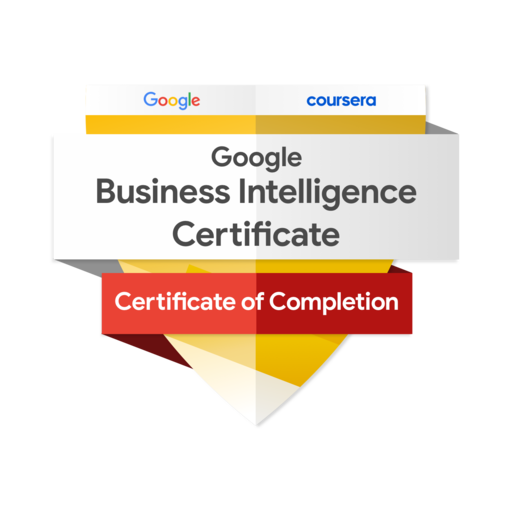

Google Business Intelligence Professional Certificate
The Google BI certificate focused on practical BI skills, including data modeling, data visualization, SQL, and dashboard creation. Developed end-to-end BI solutions that transform raw data into actionable insights. Gained hands-on experience using BigQuery, Tableau, and spreadsheets to solve real business problems, supporting data-driven decision-making. This helped prepare me for roles in BI analysis, data engineering pipelines, and analytics strategy.

Microsoft Office Specialist: Excel Associate (Office 2019)
Certified in Microsoft Excel with a strong understanding of data organization, formulas, pivot tables, and chart creation. Comfortable with using Excel to clean, analyze, and present data clearly for reporting and decision-making.